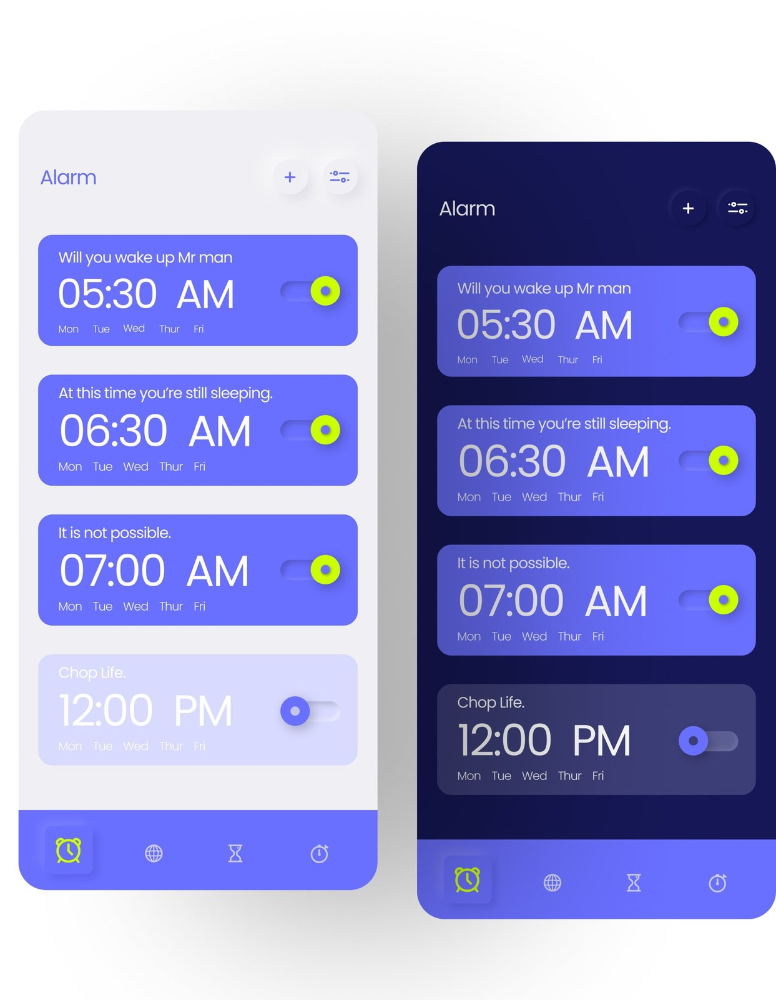
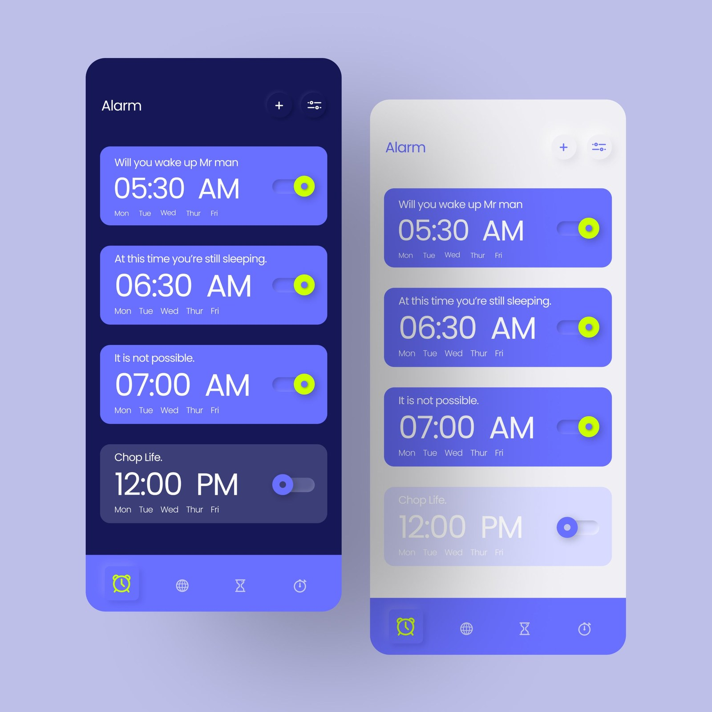
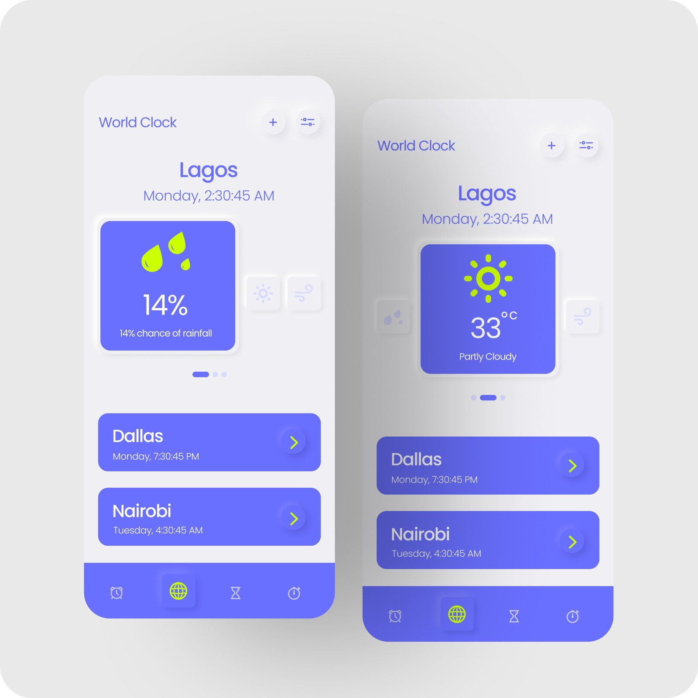
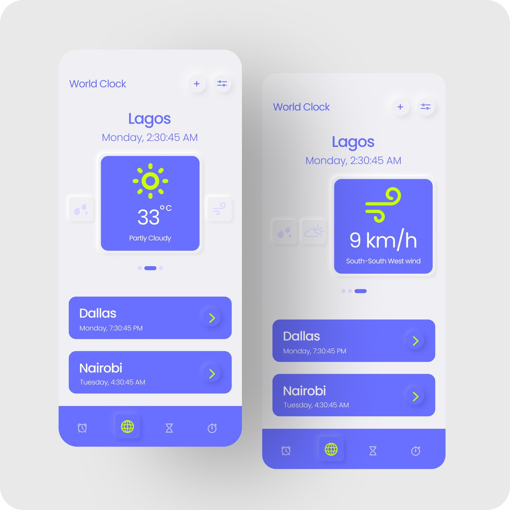
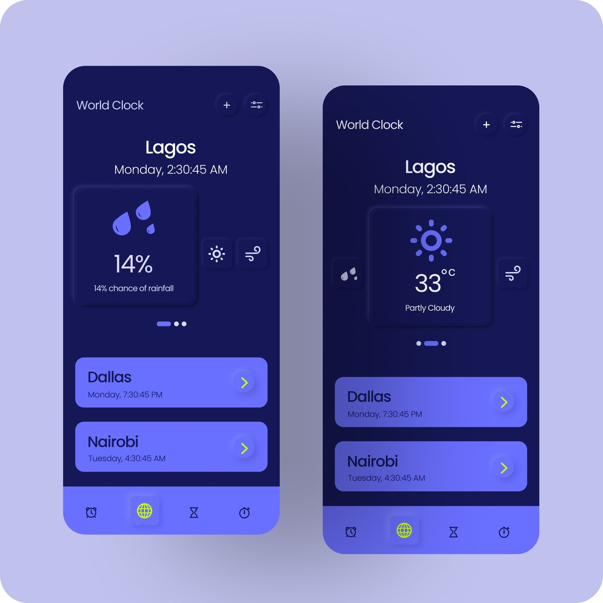
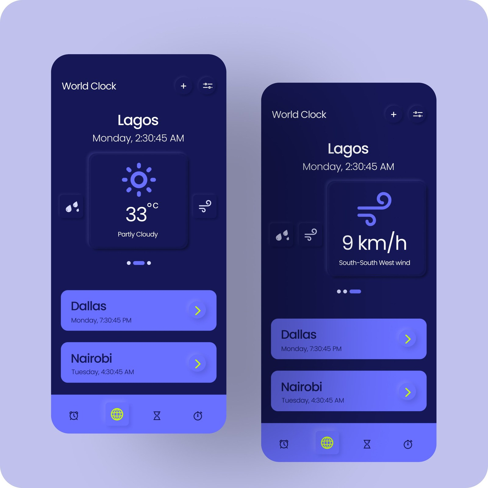
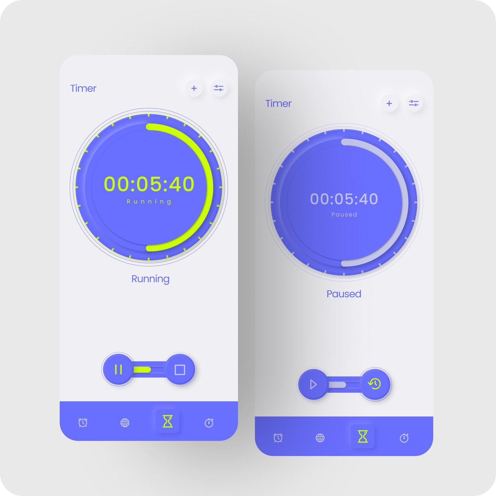
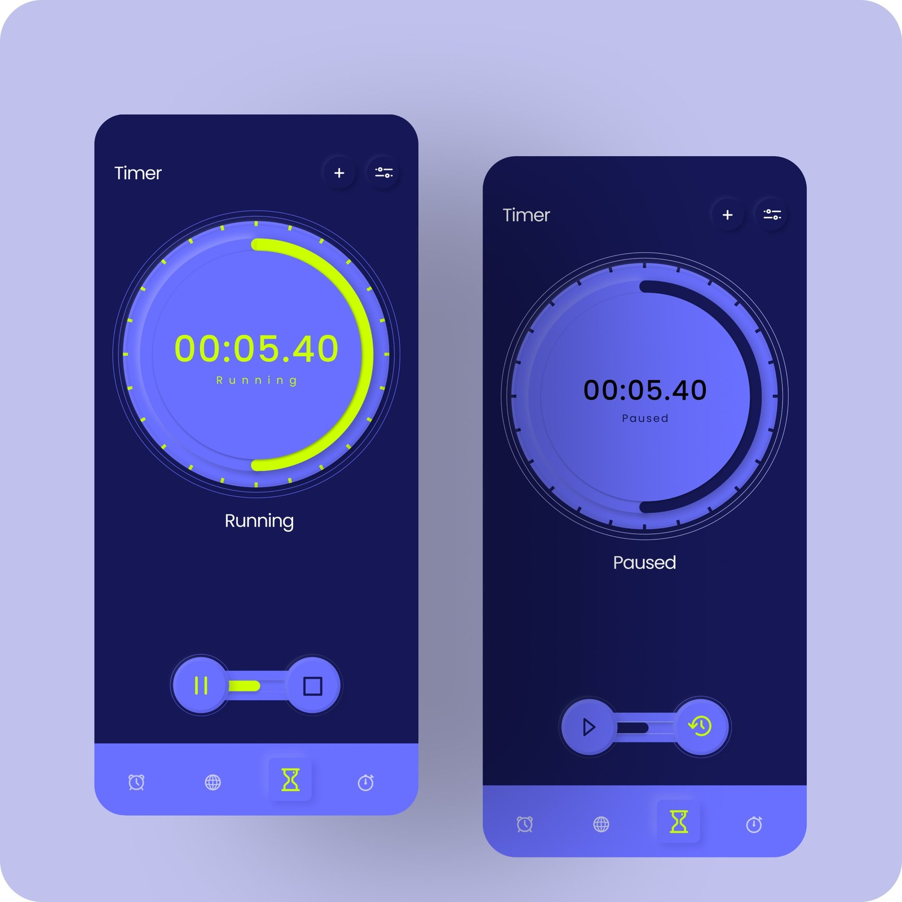
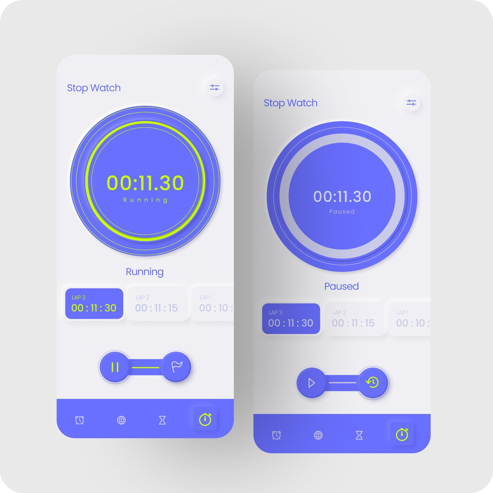
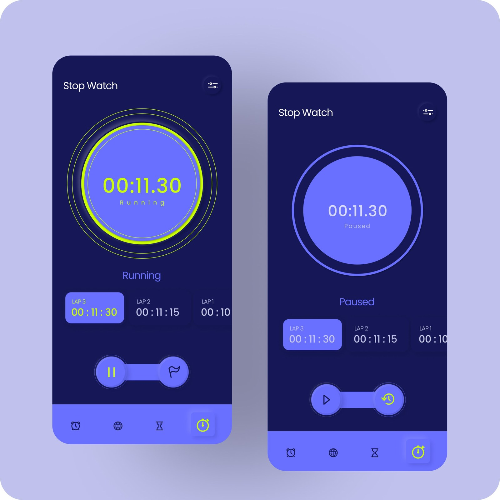

Mobile clock app
A personal exploration of neumorphism: can a soft, shadow-based style stay clear and usable in an everyday clock app?
- Discipline
- UI design
- Context
- Personal design exploration
- Screens
- Alarm, World Clock, Timer, Stopwatch
- Modes
- Light and dark
- Role
- UI/UX designer
- Tools
- Figma

The idea
This was a personal exploration: I wanted to try neumorphism, a style built from soft shadows and highlights that make elements look gently pressed into, or raised out of, the surface.
Neumorphism looks calm and tactile, but it has a reputation for being hard to use. So the real question became: can a neumorphic interface stay clear and usable? A clock app was a good test, because people use it every day, often half-awake.
Problems and fixes
Neumorphism looks soft and modern, but it has well-known usability problems. I kept the look and designed around each one.
Low contrast
Elements match the background and are separated only by faint shadows, which often fails accessibility contrast standards.
My fix: alarms, cities and dials sit on solid periwinkle cards, so they stand out without relying on shadow.
Unclear buttons
When everything is soft and raised, it’s hard to tell what you can tap.
My fix: soft shadows are used only on buttons and surfaces, so depth signals “tap here” instead of decorating everything.
Hard-to-read states
On and off can look almost identical when the only difference is a subtle shadow.
My fix: active toggles, running timers and the current tab glow lime, disabled alarms fade back, and paused rings turn grey.
Dark mode is tricky
Soft shadows almost disappear on dark backgrounds.
My fix: the solid cards and lime states carry the meaning, so nothing is lost when the shadows fade.
Approach
Exploration
I tried neumorphic elements such as soft shadows and rounded edges to give the app its own look.
Design
I designed interfaces that are attractive and practical, in both dark and light modes.
Four tools, one navigation bar
The app has four screens, Alarm, World Clock, Timer and Stopwatch, reached from a bottom bar. The active tab glows lime so you always know where you are.
Alarm
Each alarm is a card with its own label, time, repeat days and a lime toggle. Alarms that are off fade back so the active ones stand out.

World Clock
Your home city sits at the top with a swipeable weather card for rain, temperature and wind. Other cities are listed below with their local time.




Timer
A large dial shows the time left. The ring is lime while the timer runs and turns grey when it is paused, and the controls change to match.


Stopwatch
The stopwatch uses the same running and paused states, with laps in a scrolling row below the dial and the latest lap highlighted.


Takeaways
I started this project just to try a style, and ended up learning why styles need rules. Pure neumorphism looks beautiful but fails on contrast and clarity. Pairing it with strong colour and clear states let me keep the soft, tactile feel without sacrificing usability.
The lesson I took into later work: a visual trend is only worth using if people can still read, find and understand what is on the screen. Next, I would test the screens with real users and check contrast against accessibility standards.